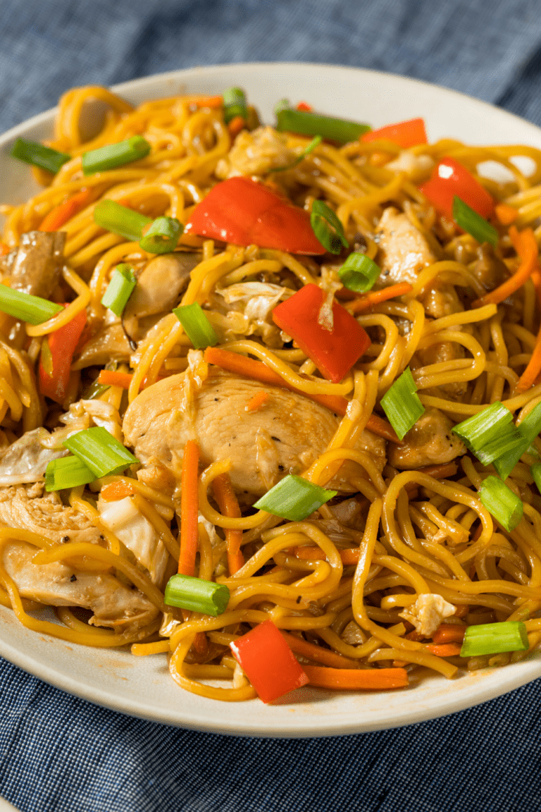

Yakisoba Chicken

Description
If you're getting tired of stir fry with rice, try this Yakisoba Chicken recipe. Delicious noodles, tender meat, and crunchy vegetables that are coeated in a sweet, salty, and savory sauce.
Ingredients
- 1/2 teaspoon sesame oil
- 1 tablespoon canola oil
- 2 tablespoons chili paste
- cloves of garlic (to taste), chopped
- 4 skinless, boneless chicken brest halves, sliced into 1-inch cubes
- 1/2 cup soy sauce, divided
- 1 onion, sliced lengthwise into eighths
- 1/2 medium head cabbage, chopped
- 2 carrots, chopped
- 8 ounces soba noodles, cooked and drained
Steps
- In a large skillet, pour the sesame oil, canola oil, and chili paste. Stir for 30 seconds on medium heat.
- Add the garlic and stir for 30 seconds. Cook the chicken with 1/4 cup of soy sauce for 5 minutes, or until no longer pink. Remove from the pan and set aside.
- Add the onion, cabbage, and carrots to the same skillet. Fry for 2 to 3 minutes, or until the cabbage starts to wilt.
- Increase the heat to high and mix in the remaining soy sauce, cooked noodles, and chicken mixture for 1 minute or until combined. Serve and enjoy!